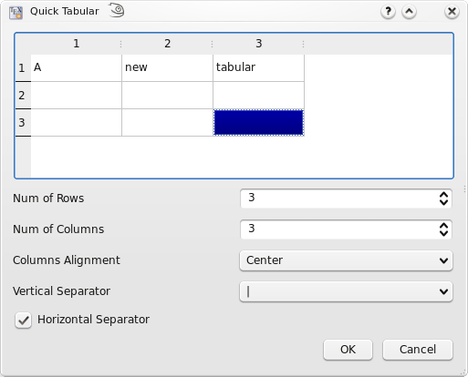
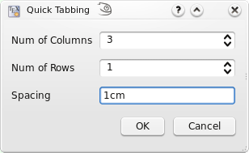
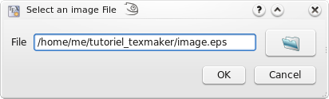
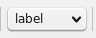
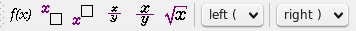
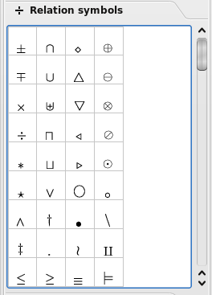
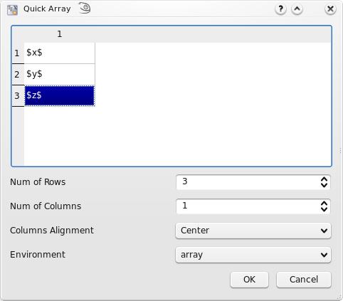

Editing a TeX document#
Creating a new document#
There are two different ways to create a new document that are described in the following subsections:
Setting the preamble of a TeX document#
To define the preamble of your document, you can use the “Quick start” wizard (“Wizard” menu).

This dialog allows you to set the main features of your document (class, paper size, encoding…). Note : You can add other options by clicking the “+” buttons. All your settings are recorded.
You can also type your own preamble model in the editor : with the “Copy/paste” or “Save As” commands, you can use it for a new document.
Using Templates to start a new document#
For new documents, templates can be used by using the command “File/New from template”. A dialogue gives a selection of templates.

You can either create a new editor document from the template or create it as file(s) on disk and open these in the editor. The former option is not available for multi-file templates.
New templates can be created by using the command “File/Make Template” on a opened document which you like to have has a template. Note that this dialog currently does not support the full capabilities of the template system. In particular you cannot supply a preview image or create a multi-file template with it. You’ll have to do this manually (s. The template format below).
User added templates can be edited or deleted by using the context menu in the template selection dialogue. Built-in templates can not be changed.
User templates are saved in the /templates/user/ subdirectory of the
config directory.
Structure your document#
To define a new part in your document (part, section, subsection, …) with TeXstudio, just use this combo box button in the format toolbar of the main toolbar:

Browsing your document#
The Structure View#
The “Structure View” (left panel) lets you quickly reach any part of your document. All you need to do is to click on any item (label, section…) and you will be taken to the beginning of the corresponding area in the editor. The mechanism for jumping to a line does not anymore only consider line numbers but really remembers text lines. Thus adding and removing lines will not lead to jumps to wrong locations.
A light-blue background shows the present cursor position in the text in the structure view as well. A greenish background denotes sections which are in the appendix.

The “Structure View” is automatically updated as you type. You can also use the “Refresh Structure” (menu “Idefix”) command at any moment.
The structure view shows labels, sections, includes and beamer blocks and todos.
There are two kind of todos that will be listed a) todos from a todo-like command, e.g. \todo{} from the package todonotes. b) todo-comments: This is a comment with a “% TODO” or “%todo”. You can adapt the regular expression for other comments to be marked as todo-comment in options/advanced editor/Regular Expression for TODO comment, e.g “%\s?[A-Z][A-Z_-]+” for any comment starting with at least two capital letter only comment.
The structure view also offers a context menu which allows one to copy/cut all text which belongs to a section (including subsection) and paste it before or after a section. Section can be indented/unindented which means that the hierarchy level is changed by one, i.e. \section is changed to \subsection, and all subsections are treated accordingly
The TOC View#
The side panel on the left offers a TOC view. The TOC shows the structure of your whole document by means of section commands (part, section, subsection, …). A mouse over shows you, in which file the section actually is.

The image shows this: A root file named document.tex that includes the file named file1.tex. The root file contains the section „Main text”, while file1.tex contains the subsection „External”. By placing the mouse pointer over this subsection in the TOC view, you find the file name file1.tex in the mouse over. This works even if the file is not open (but the document must be loaded by TeXstudio, s. Automatically load included files in editor settings). In this case a mouse click on the subsection in the TOC will open the file for you. Notice the different shades of color that indicate the sections are in different files. It can happen, that an included file doesn’t contain any sections. Then the file name itself appears in the TOC (without file extension):

The mouse over now would show the name of the file that includes file1.tex (namely document.tex). The indentation shows that the text of file1.tex is part of the section “Main text”. You may like to choose a different color in the configuration dialog (s. option Use color in global TOC in advanced editor settings).
Using Bookmarks#
You can use bookmarks in the editor of Texstudio. This can help keep text lines in mind and speed up navigation between them. To the left of the editor’s text area is a bookmark column that displays the bookmark icons. Here you can open a context menu (s. image below) and select the bookmark you want to set for a text line. Each of the ten numbered bookmarks can be used only once (when you set it a second time in the same editor, then the first one is removed), while the unnamed bookmark can be used many times. Also you can remove bookmarks with the first entry in the menu. A faster way setting bookmarks is clicking with the left mouse button in the bookmark column and Texstudio will choose a bookmark or remove an existing one.

You may choose the Bookmarks view of the left side panel, which shows the text for each line with a bookmark of all editors. With the ease of a mouse click you can jump to the text line in the editor. A tooltip shows the surrounding context of the line (s. left image below). The lines are ordered in the order you created the bookmarks. A context menu allows you to change the order of lines or remove bookmarks (s. right image below).


You probably noticed the three buttons (placed in the status line) on the lower right side of the TeXstudio window, which look like bookmarks 1, 2, and 3 (s. image Bookmarks above). With a click you can jump to the corresponding bookmark in the current editor. In fact this is a subset of the actions you can find in the menu Edit/Goto Bookmark shown in the following image in the middle. This menu also shows you the shortcuts you can use (you may miss Ctrl+0 at the end of the list, but this shortcut resets the zoom level of the editor). From the Edit/Go to menu you can choose entry Line to jump to a line with a given line number. You may want to use Previous mark or Next mark to find unnamed bookmarks. For the sake of completeness it should be said that bookmark is one of several types of markers (s. The log files). You can toggle the bookmark of the line with the text cursor using the actions from the menu Edit/Toggle Bookmark, which can be seen in the following image on the right.


Formatting your text#
You can quickly set the format of a part of your text with this tool bar :

Additional option: a selected text can be directly framed by certain
environments. Example: while clicking on the button “Bold” after
having selected the word “Hello” , you will obtain the code:
\textbf{Hello}.
This option is available for all the environments indicated by
“[selection]” in the “LaTeX” menu.
Capitalisation#
The menu “Edit” -> “Text Operations” contains a few methods for changing the capitalization of selected text:
To Lowercase
To Uppercase
To Titlecase (strict)
To Titlecase (smart)
Both variants of “To Titlecase” leave small words like a, the, of etc. in lowercase. Additionally, “To Titlecase (smart)” does not convert any words containing capital letters, assuming they are acronymes which require a fixed capitalization (e.g. “TeXstudio”).
Escaping reserved characters#
If you have text containing reserved TeX characters and want the text to appear literally in your document, you have to escape the reserved characters to prevent LaTeX from interpreting them. The following functions take care of that (Menu: Idefix)
Paste to LaTeX: Takes the text from the clipboard and escapes reserved characters prior to pasting into the editor.
Convert to LaTeX: Escapes the reserved characters in the current selection.
For example: “Less than 10% of computer users know the meaning of $PATH.” will be converted to “Less than 10\% of computer users know the meaning of \$PATH.”
Spacings#
The usual “spacing” commands are available in the “LaTeX” and “Math” menus.
Inserting a list#
The usual list environments code can be insert quickly via the
“LaTeX-List” menu.
Note : the shortcut for the \item command is Ctrl+Shift+I.
Inserting a table#
With the “Tabular” wizard (“Wizard” menu), the LaTeX code for a tabular environment can be quickly inserted :

You can set the main features of your table.
Note : this dialog allows you to type directly the code in the cells.
The corresponding LaTeX code is automatically inserted in the editor.
Manipulating tables#
TeXstudio provides some commands to ease handling of tables. The commands are located at LaTeX → Manipulate Table and in the Table toolbar. Please be aware that some unexpected results may arise, if the table constructing commands get too complex. Following commands are offered:
Add Row after the current row
Remove Row: removes the table row in which the cursor
Add Column: add a column in the complete table after current cursor position. If the cursor is positioned at start of line,first column, the column is added as new first column.
Remove Column: remove current column
Add/Remove \hline: add/remove \hline in all rows following the current row. If already a command \hline is present, no second command is placed.
Align Columns: Aligns the column separators (ampersand) by introducing whitespace. The text in the cells is aligned according to the specification in the table header. This helps reading the table source.
Remodel the table after a template. This allows one to force uniform table set-up in a document. Some templates are predefined, more can be added though it needs some programming in java script. This command is only present in the menu (math/tables)
TeXstudio also allows block cursors. Press <Ctrl>+<Alt>+<Shift> and drag the cursor with the mouse. The block cursor works like a set of normal cursors. You can copy and paste text as usual. Also you can type in new text, which will be added in every row.

Inserting a “tabbing” environment#
To help you to insert a “tabbing” code, you can use the “Tabbing” wizard (“Wizard” menu) :

Inserting a picture#
To insert a picture in your document, just use the “\includegraphics”
command in the “LaTeX” menu. Then, click on the “browser” button in
the dialog to select the graphic file.
Note : you can insert a “figure” LaTeX environment (“LaTeX -
Environments” menu) before inserting the picture.

Inserting a picture using a “wizard”#
Properly inserting figures is a challenge for LaTeX beginners and still
quite a bit of text to type for the expert. Therefore TeXstudio offers a
wizard for handling graphics insertion code in your document. “Graphics
options” defines the optional parameter of
\includegraphics[options]{file}. While the most used width/height
attributes can be easily set, alternatively you have full control with
the user defined setting.
Place the graphic inside a figure environment if it does not have to
be at an exact position in the text. Then LaTeX will determine an
optimal position on the page.
By pressing the “Save as default” button the current settings (except
file, caption and label) are stored and will hence be used as default
when you open the wizard.
The wizard also comes into play when you drag drop an image file to your
document or use copy in explorer and paste in TeXstudio. Together with
the adjustable default parameters this makes insertion of new pictures
very fast. Furthermore, if you start the wizard while the cursor is on
picture code, the wizard is used to manipulate the existing picture
settings.

Cross References and notes#
This toolbox in the toolbar allows you to insert quickly the label,
cite, ref, footnote… code.
Note : the labels used in your documents are displayed in the
“Structure View”.

**Additional option:**for the \ref command, a dialog box allows you to select directly the label.
Inserting math formula#
You can toggle in the “in-line math” environment with the “f(x)”
button in the toolbar (shortcut : Ctrl+Alt+M) or with the “Math” menu.
The shortcut for the “display math” environment is : Alt+Shift+M.
The “Math” toolbar allows you to insert the most currents mathematical
forms (frac, sqrt…) like the \left and \right tags.

With the “symbols panels” in the structure view, you can insert the code of 400 mathematical symbols.

You can also define the format of your mathematical text via the
“Math” menu.
For the “array” environments, a wizard (like the “Tabular” wizard)
is available in the “Wizard” menu. With this wizard, you can select
the environment : array, matrix, pmatrix…. The cells can be directly
completed.

Auto Completion#
Whenever you press \ followed by a letter, a list of possible LaTeX
tags is shown where you select the right one. If you type additional
letters, the list is filtered, so that only the tags starting with the
already written text are shown. If the list contains words which all
start with the same letter combination, you can press Tab to complete
all common letters. If only one element is present in the list, Tab
selects this one to do the completion, like Enter. This behaviour is
similar to tab completion in bash shells. You can also press Ctrl+Space
to open this list whenever you want.
If a tag has different options, a short descriptive text is inserted
into your text, telling you the meaning of each option. You can press
Ctrl+Left, Ctrl+Right to select all positions.
Furthermore normal text can be completed by starting to type a word and
pressing Ctrl+Space. All appropriate words in the current document are
used as possible suggestions.
If an environment is to be inserted, typing in the beginning of the
environment name and pressing Ctrl+Alt+Space gives suggestions for
adequate environments which are inserted completely with
\begin{env}..\end{env}.
And finally, user tags can be assigned an abbreviation which can also be
used with completion. Just type in the start of the abbreviation and
start the completion with Ctrl+Space. The abbreviation should show up in
the completion list, especially marked with “abbreviation (template)”.
If you change a command by completing a new command, only the command
name is substituted. The same is true for environments, where the
environment is changed in the \begin- and \end-command.
The completer has several operation modes which are shown in the tabs
below the command list.\
Typical: list only typical commands and filter out rather unusual commands.
Most used: list only commands which have already been used in the completer by the user. Is empty if txs has not been used before.
Fuzzy: search the command in a fuzzy way. The command needs to contain all given letters in the same order though with a arbitrary of letters between them. E.g. \bf lists, among others, \begin{figure}
All: list all known commands.
Thesaurus#
TeXstudio has integrated a simple thesaurus. OpenOffice 2.x databases are used for this. By placing the cursor on a word and activating the thesaurus (Ctrl+Shift+F8 or Edit/Thesaurus), it tries to find synonyms for this word. Please be patient if you start the thesaurus at first time since loading the database just occurs then and can take a few moments.

The first line to the left contains the word, for which a synonym is searched for. The list below gives a list of word classes. The can be chosen to reduce the number of suggestions. The column to the right contains the list of suggested synonyms. A selected word from this list apears in the first line to the right as proposition for replacement of the text. This word can be changed manually. It is also used to do further investigations for words and their synonyms which “start with” or “contain” that word. With “lookup” it can be directly used to look for a synonym for that word.
Special Commands#
Delete word/command/environment#
With the shortcut Alt+Del, the word under the cursor is deleted. If it is a command, the command is deleted including opening and closing braces. E.g. “\textbf{text}” leave “text”. If it is an environment, the enclosing begin/end are removed.
Rename environment#
If you place the cursor on an environment name, after a moment a mirror-cursor is activated on the environment name which allows synchronous change of the environment name in the begin- and end-command. So if you want to change a “\begin{tabular}…\end{tabular}” construction to “\begin{tabularx}…\end{tabularx}”, place the text cursor on “tabular”, wait for a second and then, after the mirror-cursor appears, change “tabular” to “tabularx”.
Cut Buffer#
If you select something and then start to type in a command and complete it, the selection is put in as first argument. E.g. you have a “text”, select it and start typing “\textbf”, command which is completed. The resulting text is “\textbf{text}”.